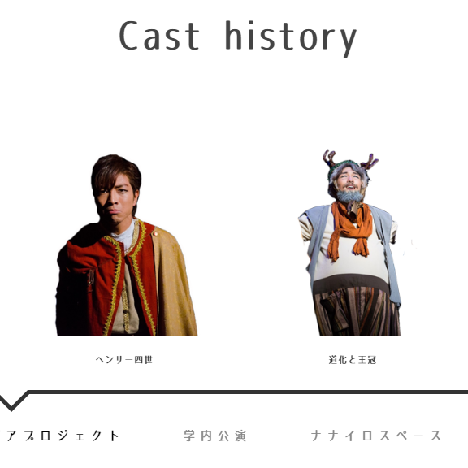
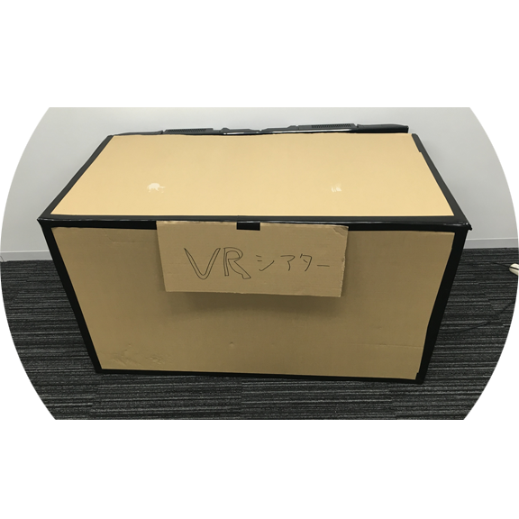

PROFILE
松尾良馬（かずま）
生年月日 ： 1993/09/21
出身地 ： 埼玉県
所属 ： 明治大学大学院 理工学研究科新領域創造専攻 宮下研究室
研究分野 ： HCI・歩行への介入
前の研究分野 ： 組織論・社員教育の洗脳性
勤務地 ： 株式会社360CHANNEL
趣味 ： 動画編集・ラジオ・フットサル・自転車
メールアドレス ： baurudf@icloud.com
AfterEffects・PremirePro等を使うのが好きです．そのほかのAdobe系もなんとなく使えます．一応理系なのでプログラミングも必要最低限できます．研究の実装は，processing・Arduino・Puredata等を使っています．
PROJECT
足音遅延フィードバックが歩行におよぼす影響の分析
歩行に関する研究の知見は，リハビリテーションやVRの分野に多く応用されている．その中で「聴覚的遅延フィードバック」は知覚や行動に様々な影響をおよぼすことが示され，歩行にも影響が生じることが確認されている．本研究では，歩行者に対し遅延した自身の足音を提示し，歩行動作に生じる影響を検証した．実験の結果，一歩間における歩行時間が増加する傾向がみられた．また“立脚期”と“遊脚期”に大別される歩行周期において，一歩間の“立脚期”の時間が増加する傾向が確認された．
第24回インタラクティブシステムとソフトウェアに関するワークショップ論文集 (WISS 2016)
-
UNOHARA'S PORTFORIO
俳優活動をしている卯ノ原圭吾くんのポートフォリオサイトを作りました！
-
MY VR THEATER
DMM VR THEATERに行きたい．でもお金がない．じゃあ作ろう！ということで，研究室に落ちていたディスプレイを使って，『MY VR THEATER』なるものを作りました．スラムダンクを立体的に見ました！
-
VIDEO DIRECTION

趣味で動画制作をしています．
ご相談いただければ，どんな動画でも承ります！お仕事ください！